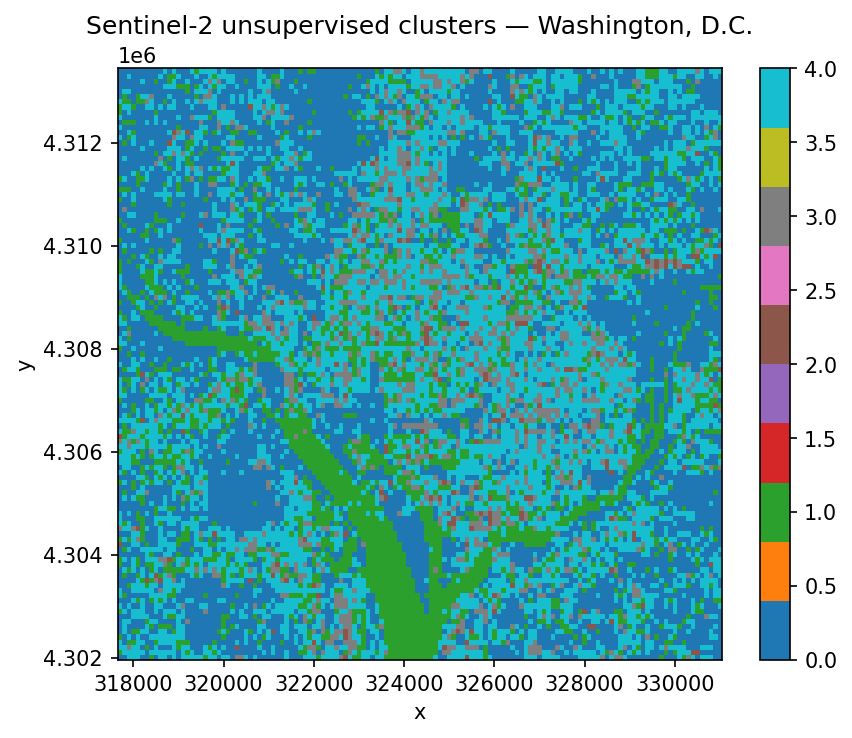
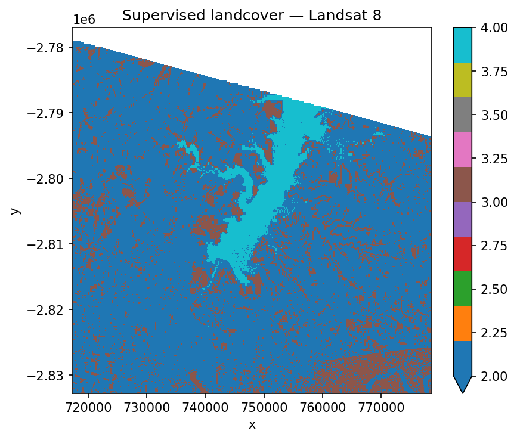
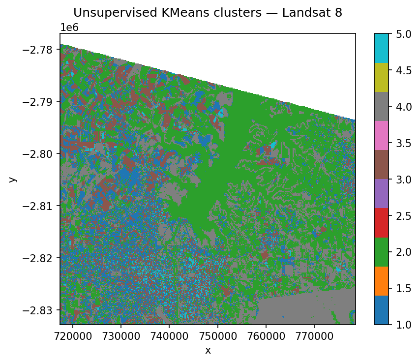
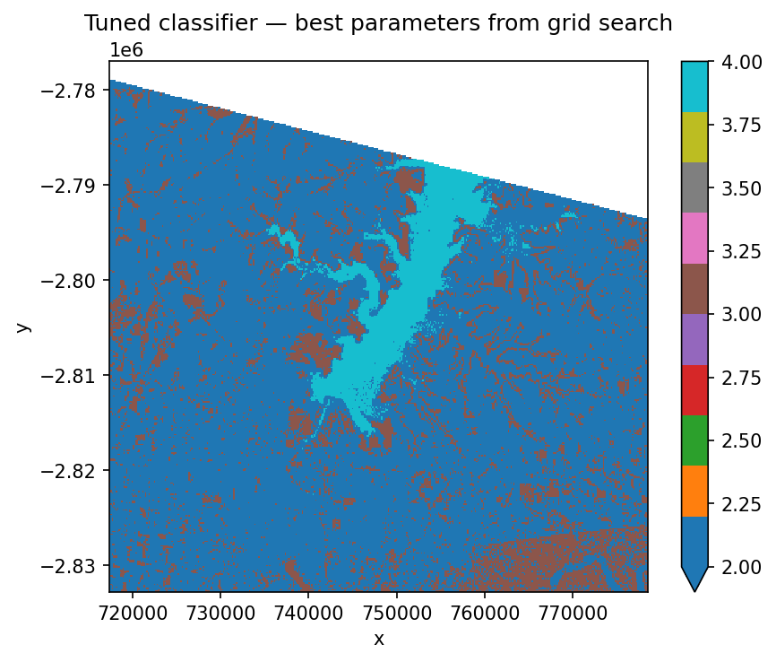

Learning Objectives
Go from a STAC search to a classified map in under a dozen lines of code
Fit and predict
scikit-learnpipelines on satellite imagery with GeoWombatRun both supervised (labelled) and unsupervised (clustering) workflows
Tune hyperparameters and cross-validate on spatial data
Handle missing values so sklearn models don’t choke on
NaN
Review
Spatial Prediction using ML in Python#
Training a classifier on satellite imagery used to mean wiring together half a dozen different libraries — one to read the raster, one to rasterise the labels, one to stack features into the shape scikit-learn expects, and one to turn the predictions back into a georeferenced image. GeoWombat collapses all of that into a single call. Any scikit-learn classifier (or Pipeline of them) can be handed directly to fit, predict, or fit_predict, and you get back an xarray.DataArray with the same spatial metadata as the input. No reshape gymnastics, no losing the CRS, no disk round-trips.
The rest of this chapter is organised from “fastest possible demo” to “I’d like to actually tune this model.” If you’ve never done a raster classification in Python before, start from the top. If you’re already comfortable and just want to know how the STAC integration works, jump to the STAC-in-a-dozen-lines section below.
Note
The ML and STAC helpers are optional extras. Install them with:
pip install "geowombat[ml,stac]"
That pulls in scikit-learn, dask-ml, lightgbm, sklearn-xarray, pystac_client, stackstac, and planetary_computer.
Classify a STAC image in under a dozen lines#
Let’s open with the punchline: streaming a Sentinel-2 scene from a public STAC catalog, clustering it into five unsupervised classes, and plotting the result. No file downloads, no labels, no pre-processing.
from geowombat.core.stac import open_stac
from geowombat.ml import fit_predict
from sklearn.cluster import MiniBatchKMeans
from sklearn.pipeline import Pipeline
import matplotlib.pyplot as plt
# 1. Search Element 84's STAC catalog for Sentinel-2 scenes over D.C.
sentinel_scenes, scene_metadata = open_stac(
stac_catalog="element84_v1",
collection="sentinel_s2_l2a",
bounds=(-77.1, 38.85, -76.95, 38.95),
epsg=32618,
bands=["blue", "green", "red", "nir"],
start_date="2023-06-01",
end_date="2023-07-31",
cloud_cover_perc=20,
resolution=100.0,
chunksize=256,
max_items=2,
compute=True,
)
# 2. Define a one-step sklearn pipeline — MiniBatchKMeans for a fast unsupervised fit
unsupervised_kmeans_pipeline = Pipeline([
("kmeans", MiniBatchKMeans(n_clusters=5, random_state=0, n_init=3))
])
# 3. Classify a single date
first_scene = sentinel_scenes.isel(time=0)
cluster_map = fit_predict(data=first_scene, clf=unsupervised_kmeans_pipeline)
fig, ax = plt.subplots(dpi=150, figsize=(6, 5))
cluster_map.plot(robust=True, ax=ax, cmap="tab10")
ax.set_title("Sentinel-2 unsupervised clusters — Washington, D.C.")
plt.tight_layout(pad=1)
plt.show()
Searching element84_v1 for sentinel_s2_l2a...
Found 1 items.

That’s it. Five classes assigned to every pixel in the scene. The clusters won’t line up with any semantic land-cover schema — we didn’t give the model any labels, so it grouped pixels purely by spectral similarity — but it’s a surprisingly useful starting point for exploring a new scene, spotting water bodies, or seeding a supervised workflow.
Three things are worth noticing:
open_stacreturns anxarray.DataArray. The(time, band, y, x)output slots straight intofit_predict. Select a single timestamp with.isel(time=0)before classifying, otherwise GeoWombat will complain that the array has a time dimension.The sklearn
Pipelineis just a normal sklearn object. Anything you can compose for tabular data — scalers, PCA, classifiers, imputers — also works here. GeoWombat only changes where the data comes from and what the output looks like; the model itself is unmodified.compute=Truepulls the pixels into memory with a progress bar. For larger areas you’ll want to leave it asFalseand let Dask handle chunked computation lazily.
Now let’s unpack the same pattern with proper training labels — but first, a short detour to explain what a scikit-learn Pipeline actually is, since we’re going to lean on them for the rest of the chapter.
A quick primer on scikit-learn Pipeline objects#
A classifier is almost never the only thing you want to apply to your data. Real workflows usually need a few preprocessing steps — scale the features, reduce dimensions, fill missing values — before the model sees them. You could call each step manually:
# The painful way
features_scaled = scaler.fit_transform(raw_features)
features_reduced = pca.fit_transform(features_scaled)
classifier.fit(features_reduced, training_labels)
# …and then remember to apply the exact same steps, in the exact same order,
# to every new image you want to predict on. If you forget one, predictions
# silently go wrong.
A Pipeline bundles all of those steps into one object. Each step is a named tuple: (step_name, estimator). The pipeline then behaves like a single model — you call .fit() once and it walks through every stage in order, and when you call .predict() later, it re-applies the same fitted transforms automatically, in the correct sequence.
from sklearn.pipeline import Pipeline
from sklearn.preprocessing import StandardScaler
from sklearn.decomposition import PCA
from sklearn.naive_bayes import GaussianNB
landcover_pipeline = Pipeline([
("scaler", StandardScaler()), # step 1: centre + rescale each band
("pca", PCA()), # step 2: decorrelate into components
("classifier", GaussianNB()), # step 3: the actual classifier
])
Why this matters for remote sensing:
No data leakage. When you split your labels into train/test folds for cross-validation, the scaler and PCA get re-fitted inside each fold. Doing this by hand is easy to get wrong: fit the scaler on all the data and you’ve already let the test set influence training.
Introspection. Each step has a name, and you can address its parameters from outside using
stepname__paramname— the same convention we’ll use for hyperparameter tuning below.Swap-in, swap-out. Want to try LightGBM instead of GaussianNB? Replace the
("classifier", ...)tuple. Nothing else changes.GeoWombat treats the pipeline as one unit.
fit(landsat_scene, landcover_pipeline, training_polygons, col="lc")fits all three stages in order, andpredict(landsat_scene, feature_cube, trained_pipeline)re-applies them to every pixel in the scene.
With that in hand, the rest of the chapter is mostly about which estimators to put into a pipeline and how to pick their hyperparameters.
Supervised classification on Landsat#
Most real classification tasks start with labelled training data — polygons or points that a human has tagged with a class name. The GeoWombat example data ships with a small Landsat 8 scene over an agricultural area and a matching set of polygons labelled water, crop, tree, and developed. Before we can train anything, scikit-learn needs integer labels, not strings, so we run the polygon names through a LabelEncoder and store the result in a new lc column.
import geowombat as gw
from geowombat.data import l8_224078_20200518, l8_224078_20200518_polygons
from geowombat.ml import fit, predict, fit_predict
import geopandas as gpd
from sklearn.pipeline import Pipeline
from sklearn.preprocessing import LabelEncoder, StandardScaler
from sklearn.decomposition import PCA
from sklearn.naive_bayes import GaussianNB
label_encoder = LabelEncoder()
training_polygons = gpd.read_file(l8_224078_20200518_polygons)
training_polygons["lc"] = label_encoder.fit(training_polygons.name).transform(
training_polygons.name
)
training_polygons[["name", "lc", "geometry"]]
| name | lc | geometry | |
|---|---|---|---|
| 0 | water | 3 | POLYGON ((737544.502 -2795232.772, 737544.502 ... |
| 1 | crop | 0 | POLYGON ((742517.658 -2798160.232, 743046.717 ... |
| 2 | tree | 2 | POLYGON ((742435.36 -2801875.403, 742458.874 -... |
| 3 | developed | 1 | POLYGON ((738903.667 -2811573.845, 738926.586 ... |
Next we build the pipeline. The three-stage recipe below is a solid default for optical imagery:
StandardScalercentres each band on zero and rescales to unit variance, so the classifier isn’t biased toward bands with larger raw numbers.PCArotates the features into decorrelated components, which helps when bands are highly redundant (which they usually are).GaussianNBis a fast Naive Bayes classifier — not the most accurate option, but perfect for demonstrations.
fit_predict does the whole training-and-applying cycle in one call. Under the hood it samples the raster at the label geometries to build the training table, fits the pipeline, and then runs the trained model over every pixel in the scene.
landcover_pipeline = Pipeline([
("scaler", StandardScaler()),
("pca", PCA()),
("classifier", GaussianNB()),
])
fig, ax = plt.subplots(dpi=150, figsize=(6, 5))
with gw.config.update(ref_res=150):
with gw.open(l8_224078_20200518, nodata=0) as landsat_scene:
landcover_map = fit_predict(
landsat_scene, landcover_pipeline, training_polygons, col="lc"
)
landcover_map.plot(robust=True, ax=ax, cmap="tab10")
ax.set_title("Supervised landcover — Landsat 8")
plt.tight_layout(pad=1)
plt.show()

If you need to inspect or reuse the trained model — for example, to score a different scene — split the two halves with fit and predict instead. fit returns three things:
feature_cube— the raster reshaped into the(samples, features)view sklearn expects.training_samples— a(X, y)tuple built by sampling the raster only at your label geometries. This is the actual data used to train the pipeline.trained_pipeline— the fitted pipeline, ready to reuse.
with gw.config.update(ref_res=150):
with gw.open(l8_224078_20200518, nodata=0) as landsat_scene:
feature_cube, training_samples, trained_pipeline = fit(
landsat_scene, landcover_pipeline, training_polygons, col="lc"
)
landcover_map = predict(landsat_scene, feature_cube, trained_pipeline)
print(landcover_map)
<xarray.DataArray (band: 1, y: 372, x: 408)> Size: 1MB
dask.array<xarray-<this-array>, shape=(1, 372, 408), dtype=float64, chunksize=(1, 256, 256), chunktype=numpy.ndarray>
Coordinates:
* x (x) float64 3kB 7.174e+05 7.176e+05 ... 7.783e+05 7.785e+05
* y (y) float64 3kB -2.777e+06 -2.777e+06 ... -2.833e+06 -2.833e+06
targ (y, x) uint8 152kB dask.array<chunksize=(256, 256), meta=np.ndarray>
* band (band) <U4 16B 'targ'
Attributes: (12/13)
transform: (150.0, 0.0, 717345.0, 0.0, -150.0, -2776995.0)
crs: 32621
res: (150.0, 150.0)
is_tiled: 0
nodatavals: (0, 0, 0)
_FillValue: 0
... ...
offsets: (0.0, 0.0, 0.0)
filename: /home/mmann1123/miniconda3/envs/pygis/lib/python3.11...
resampling: nearest
AREA_OR_POINT: Area
_data_are_separate: 0
_data_are_stacked: 0
Unsupervised classification on Landsat#
Unsupervised classification skips the labelling step entirely and asks the algorithm to find natural clusters in the data. It’s perfect when you don’t yet know what’s in your scene or you want to explore the spectral space before investing in training data. Because there’s no ground truth, the cluster numbers are arbitrary — it’s up to you to inspect the result and assign meaning (cluster 3 is water, cluster 5 is bare soil, and so on).
A common rule of thumb is to ask for roughly twice as many clusters as you expect semantic classes, then merge similar-looking clusters afterwards. Here we use six clusters on a four-class scene.
from sklearn.cluster import KMeans
kmeans_pipeline = Pipeline([
("kmeans", KMeans(n_clusters=6, random_state=0, n_init=10))
])
fig, ax = plt.subplots(dpi=150, figsize=(6, 5))
with gw.config.update(ref_res=150):
with gw.open(l8_224078_20200518, nodata=0) as landsat_scene:
cluster_map = fit_predict(landsat_scene, kmeans_pipeline)
cluster_map.plot(robust=True, ax=ax, cmap="tab10")
ax.set_title("Unsupervised KMeans clusters — Landsat 8")
plt.tight_layout(pad=1)
plt.show()

Which classifier should I use?#
GeoWombat doesn’t care — the only requirement is that the estimator follows scikit-learn’s fit / predict API. That said, a handful of classifiers show up over and over in remote sensing because they handle high-dimensional, noisy, imbalanced data well.
Classifier |
Module |
Notes |
|---|---|---|
Random Forest |
The default workhorse — robust, handles many bands, rarely embarrassing |
|
LightGBM |
|
Fast gradient boosting, best when you have lots of training samples |
Gaussian Naive Bayes |
Lightning-fast baseline; assumes feature independence |
|
Support Vector Machine |
Excellent with small, clean training sets; slow to scale |
|
k-Nearest Neighbours |
Non-parametric, useful when class boundaries are irregular |
|
K-Means / MiniBatchKMeans |
Unsupervised; use MiniBatch on large rasters |
|
Gaussian Mixture Model |
Soft clustering; models overlapping classes |
Swap any of these into the pipeline above without changing the surrounding code.
Cross-validation and hyperparameter tuning#
Fitting a model is easy. Convincing yourself it will generalise to unseen pixels is the harder — and more important — part.
Why cross-validation?#
If you train and score a classifier on the same pixels, the score tells you almost nothing: the model has already seen the answer. The right question is “how well does this model do on data it has never seen?” k-fold cross-validation is the standard answer. The idea is simple:
Split your labelled pixels into k roughly equal folds (typically 5 or 10).
Train on k − 1 folds and score on the held-out fold.
Repeat k times, rotating which fold is held out.
Average the scores.
Now you have an estimate of out-of-sample performance that doesn’t depend on one lucky train/test split. Scikit-learn calls this KFold, and there’s a whole family of related splitters — StratifiedKFold preserves class balance across folds (often a better choice for imbalanced land-cover classes), and GroupKFold keeps spatially clustered samples together.
Why hyperparameter tuning?#
Every classifier and preprocessing step has knobs — how many PCA components to keep, whether to subtract the mean when scaling, how many trees in a random forest, what learning rate for gradient boosting. These are hyperparameters: settings you choose before training, not weights the model learns. Different values give different models, and the “right” value depends on your data.
GridSearchCV automates the search. You give it:
a pipeline,
a parameter grid — a dictionary of every hyperparameter you want to vary and the values to try,
a cross-validation splitter,
a scoring metric (accuracy, balanced accuracy, F1, etc.).
GridSearchCV then trains one model per combination of parameters per fold, averages the scores, and reports which combination came out on top. For our three-stage pipeline below, a grid of 2 × 3 combinations × 5 folds means 30 model fits — negligible on a tiny example, eye-watering on real data. When the grid gets large, reach for RandomizedSearchCV or HalvingGridSearchCV instead.
Wiring it up with GeoWombat#
Because GeoWombat’s training data lives in an xarray-aware structure, the sklearn cross-validator needs a thin wrapper, CrossValidatorWrapper, so it knows how to slice the folds. Everything on top of that is vanilla sklearn.
The hyperparameter_grid below says:
try both
TrueandFalseforStandardScaler’swith_std(should we divide by the standard deviation, or just centre?);try keeping 1, 2, or 3
PCAcomponents (how much dimensionality reduction helps?).
The naming convention stepname__param — double underscore — is how sklearn routes a parameter down to the right stage of the pipeline. scaler__with_std means “set with_std on the step named scaler.”
from sklearn.model_selection import GridSearchCV, KFold
from sklearn_xarray.model_selection import CrossValidatorWrapper
landcover_pipeline = Pipeline([
("scaler", StandardScaler()),
("pca", PCA()),
("classifier", GaussianNB()),
])
xarray_aware_splitter = CrossValidatorWrapper(KFold())
tuning_search = GridSearchCV(
landcover_pipeline,
cv=xarray_aware_splitter,
scoring="balanced_accuracy",
param_grid={
"scaler__with_std": [True, False],
"pca__n_components": [1, 2, 3],
},
)
fig, ax = plt.subplots(dpi=150, figsize=(6, 5))
with gw.config.update(ref_res=150):
with gw.open(l8_224078_20200518, nodata=0) as landsat_scene:
feature_cube, training_samples, trained_pipeline = fit(
landsat_scene, landcover_pipeline, training_polygons, col="lc"
)
# training_samples is an (X, y) tuple — unpack with *
tuning_search.fit(*training_samples)
print("Best score :", tuning_search.best_score_)
print("Best params:", tuning_search.best_params_)
# Apply the winning hyperparameters to the trained pipeline
trained_pipeline.set_params(**tuning_search.best_params_)
tuned_landcover_map = predict(landsat_scene, feature_cube, trained_pipeline)
tuned_landcover_map.plot(robust=True, ax=ax, cmap="tab10")
ax.set_title("Tuned classifier — best parameters from grid search")
plt.tight_layout(pad=1)
plt.show()
Best score : 0.9384615384615385
Best params: {'pca__n_components': 2, 'scaler__with_std': True}

tuning_search.best_params_ is a dictionary — we unpack it with ** into trained_pipeline.set_params() so the final prediction uses the tuned hyperparameters. Other attributes worth knowing: tuning_search.cv_results_ has every fold’s score, and tuning_search.best_score_ is the averaged metric you optimised.
Handling missing data#
Most sklearn models refuse to process NaN — they’ll either raise an error or silently drop rows. In remote sensing, missing data is the norm, not the exception: Landsat scenes have 0-valued fill pixels along scene edges, cloud masks punch holes wherever there’s cover, and time stacks have different missing pixels at every step.
GeoWombat’s gw.open(..., nodata=0) flags the missing value for downstream masking, and .gw.mask_nodata() converts those values to NaN. You can then drop a SimpleImputer into the pipeline to fill the gaps before the classifier sees them.
from sklearn.impute import SimpleImputer
imputing_cluster_pipeline = Pipeline([
("fill_missing", SimpleImputer(missing_values=np.nan, strategy="mean")),
("kmeans", KMeans(n_clusters=6, random_state=0, n_init=10)),
])
with gw.open(scene_files,
band_names=[band_name],
time_names=scene_dates,
nodata=-9999) as nodata_aware_stack:
cloud_masked_stack = nodata_aware_stack.gw.mask_nodata()
cluster_map = fit_predict(cloud_masked_stack, imputing_cluster_pipeline)
SimpleImputer is the simplest option — other strategies (median, most_frequent, constant) are available, along with more sophisticated imputers like KNNImputer and IterativeImputer. See the sklearn imputation docs for guidance.
Saving the output#
fit_predict returns a plain xarray.DataArray with GeoWombat’s accessor, so writing the classified map to disk is the same one-liner you’d use for any other raster:
landcover_map.gw.save("landcover.tif", overwrite=True)
From there the file is a standard Cloud-Optimized GeoTIFF — drop it into QGIS, hand it to a colleague, or upload it to your own STAC catalog and close the loop.